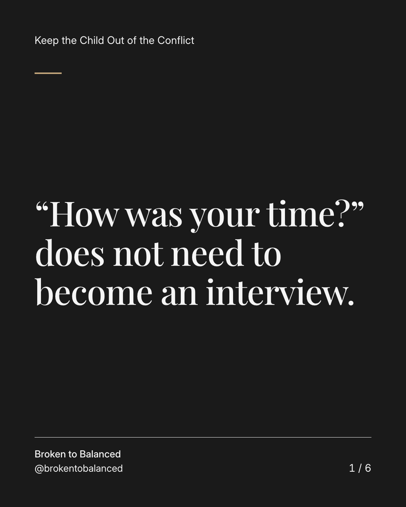
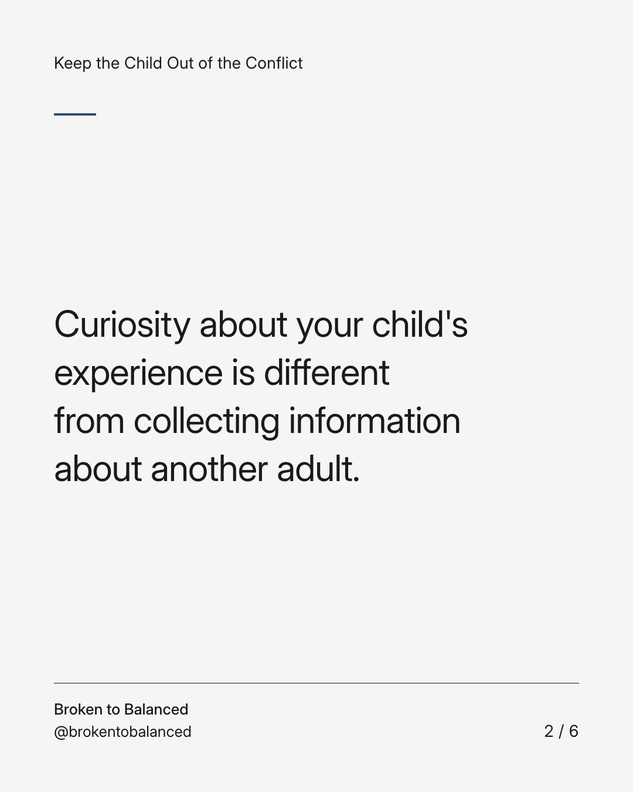
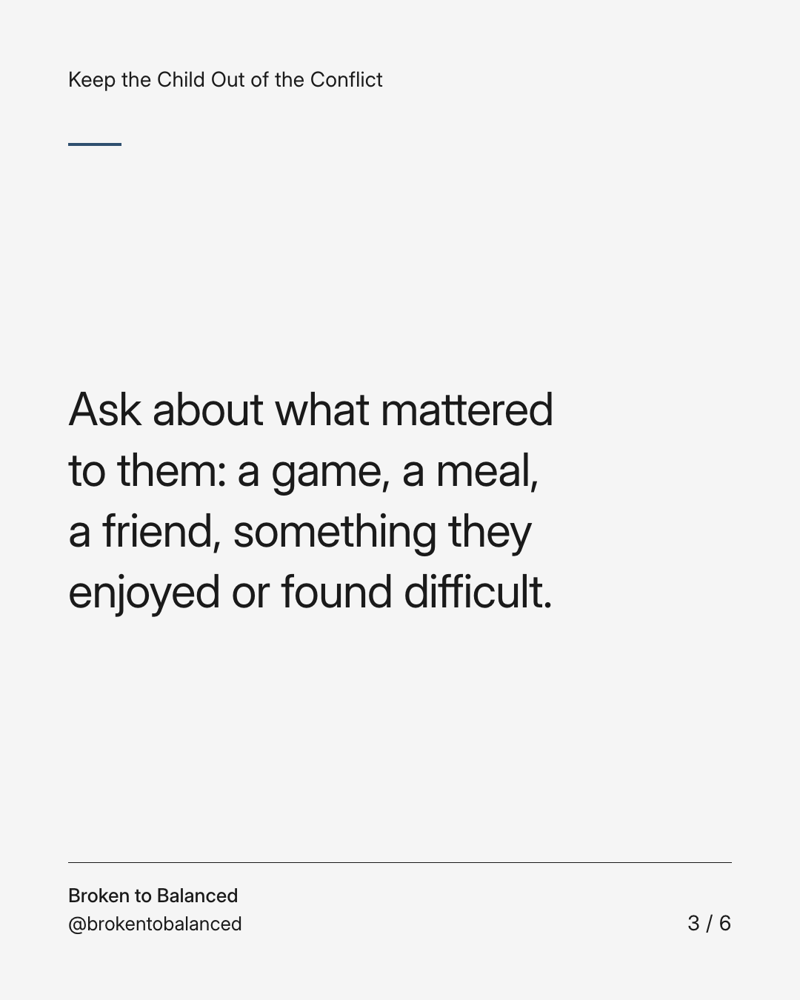
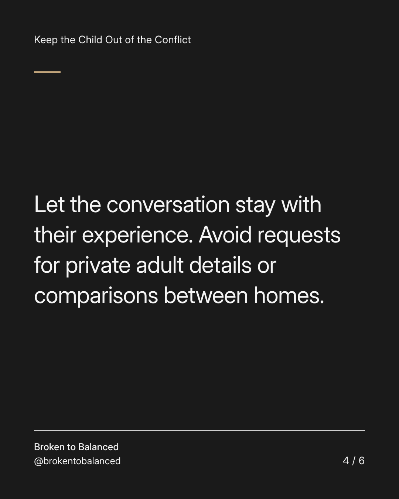
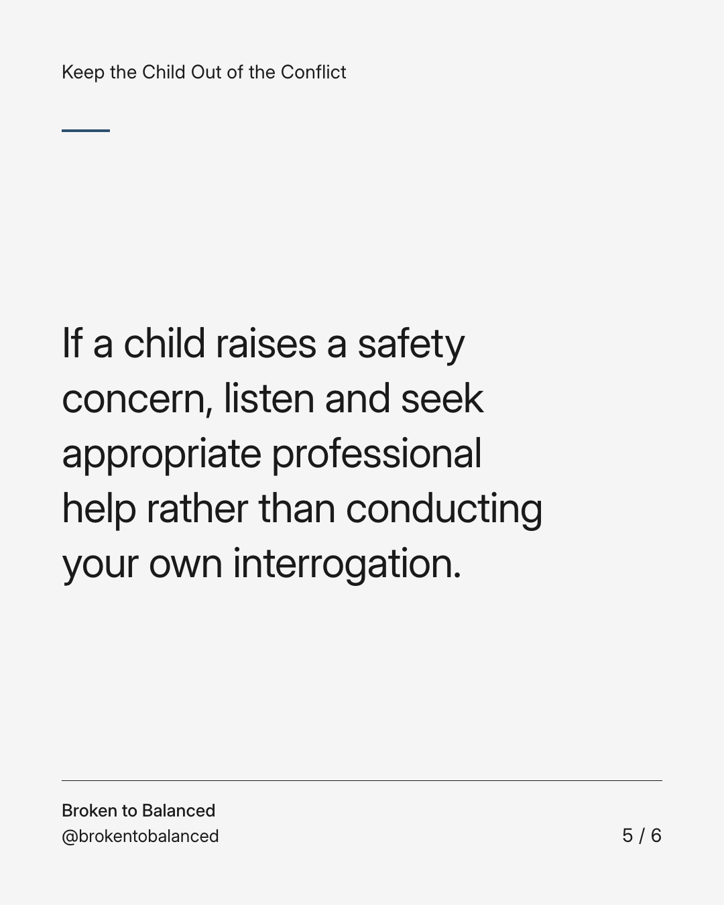
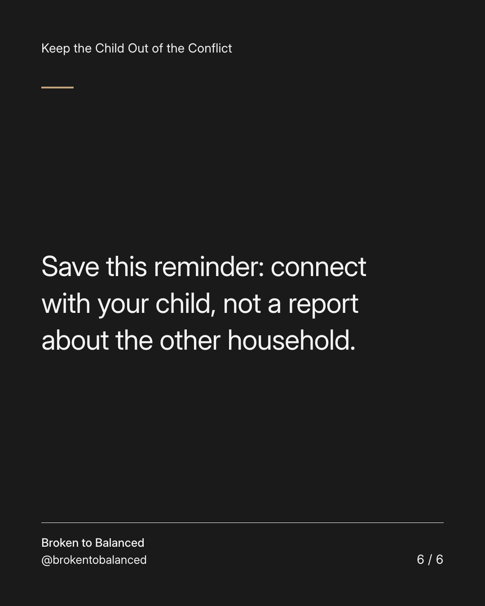

Exact text and accessibility text
“How was your time?” does not need to become an interview.
Slide 1 of 6. “How was your time?” does not need to become an interview.


Exact text and accessibility text
Curiosity about your child's experience is different from collecting information about another adult.
Slide 2 of 6. Curiosity about your child's experience is different from collecting information about another adult.


Exact text and accessibility text
Ask about what mattered to them: a game, a meal, a friend, something they enjoyed or found difficult.
Slide 3 of 6. Ask about what mattered to them: a game, a meal, a friend, something they enjoyed or found difficult.


Exact text and accessibility text
Let the conversation stay with their experience. Avoid requests for private adult details or comparisons between homes.
Slide 4 of 6. Let the conversation stay with their experience. Avoid requests for private adult details or comparisons between homes.


Exact text and accessibility text
If a child raises a safety concern, listen and seek appropriate professional help rather than conducting your own interrogation.
Slide 5 of 6. If a child raises a safety concern, listen and seek appropriate professional help rather than conducting your own interrogation.


Exact text and accessibility text
Save this reminder: connect with your child, not a report about the other household.
Slide 6 of 6. Save this reminder: connect with your child, not a report about the other household.
Exact caption
Plain-text fallback: select and copy the caption.